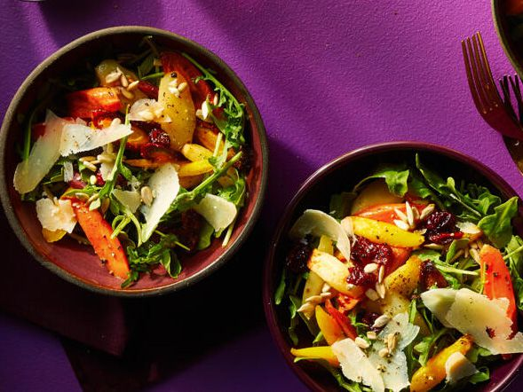

Honey Lemon Roasted Carrot Salad:
Home:

Description:
Ingredients:
- 2 pounds carrots, peeled and bias-sliced
- 3 tablespoons olive oil, divided
- 3 cloves garlic, sliced
- 2 tablespoons lemon juice
- 2 teaspoons honey
- 1/4 teaspoon salt
- 1/4 teaspoon freshly ground black pepper
- 2 cups arugula
- 1/3 cup dried cranberries
- 2 tablespoons dry roasted sunflower seeds
- shaved Parmesan cheese
Steps:
-
Preheat the oven to 400 degrees F (200 degrees C).
-
Divide carrots between two 10x15-inch baking pans.
Drizzle with 1 tablespoon oil per pan; toss to coat.
-
Roast carrots until soft and starting to brown, stirring occasionally, about 20 minutes.
Top with sliced garlic and roast 5 minutes more. Let cool 15 minutes.
- Meanwhile, whisk together lemon juice, honey, salt, pepper,
and remaining 1 tablespoon oil in an extra-large bowl.
Add roasted carrots, arugula, and cranberries; toss to coat.
Top with sunflower seeds and shaved Parmesan.
Cook's Note:
For shaved Parmesan, use a veggie peeler to shave curls from a block or wedge of Parmesan cheese.